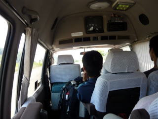
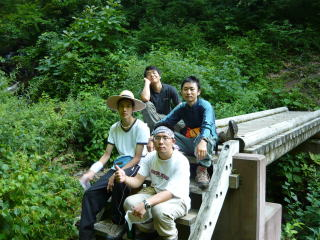
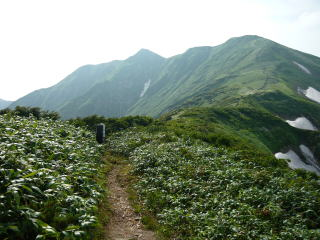
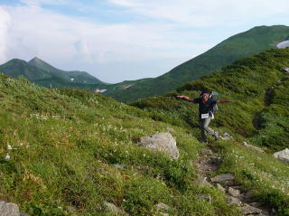
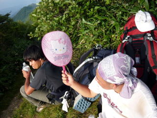

日付 '08 8/11-...
参加者 5名
行程 8/11 京都駅八条口～(夜行バス)
8/12 (夜行バス)～山形駅～（JR左沢線）～左沢駅～(朝日登山バス)～朝日鉱泉(テント泊)
8/13 朝日鉱泉～中ツル尾根～大朝日岳～大朝日小屋～西朝日岳～竜門山～竜門小屋(泊)
8/14 竜門小屋～寒江山～三方境～狐穴小屋～中先峰～以東岳～以東小屋
8/15 以東小屋～オツボ峰～大鳥小屋(タキタロウ山荘)～泡滝ダム～(大鳥登山バス)～鶴岡市内(打ち上げ)
8/16 解散
コンセプト 北に行こう
撮影機器 DMC-LS80
COOLPIX S200
 出発前に事故って大けがをした先輩のお見舞いへ行きました。 出発前に事故って大けがをした先輩のお見舞いへ行きました。
OBさんにも餞別うたくさん頂いて出発しました。

翌朝，JR山形駅前に到着。さっそく餞別その1：「ブドウ」をいただきます。食べきれません。
左沢線で終点まで移動。いい感じのローカル線です。
10時10分，左沢駅に到着。ランチまでの間，思い思いに暇をつぶします。一人熟女キラーがいました。
 13時，登山バスに乗車。京都駅から一緒の方もいました。
無理を言って駐車場の端にテントを張らせてもらいました。
翌朝5時半，行動開始。早速行水。
しばらくは川沿いのなだらかな道を通ります。

7時20分，地図上の中間地点で最後の水場。ここから中ツル尾根の上りが始まります。
8時50分，長命水への標識。予想通り枯れていました。超神水を飲みたい気分です。
大朝日岳山頂が見えてきました。餞別のスイカが体力を奪います。
12時20分，山頂手前のピーク。涼しい風が吹いてきました。

12時40分，山頂到着。念願のスイカを処理します。最高の味でした。
10分ですぐ下の大朝日小屋に到着。
サンドウィッチで腹ごしらえ。80代の元気な管理人さんの勧めもあり，竜門小屋まで行くことに。
14時20分，出発。すぐ下の雪渓からの湧水(金玉水)で水分補給。想像を絶するおいしさ。


ゆっくりと景色と適度なアップダウンを愉しみながら進みます。山中行動３日間のうち，景色が見えたのはこの日だけでした。
16時，中岳を経て西朝日岳に到着。大朝日岳がすごいとんがっています。また，肉眼でもはっきりと大朝日小屋が見えます。




17時，日がだいぶ傾いたころ，竜門山に到着。少し休憩。餞別のキティちゃんうちわで身体を冷やす。
17時20分，竜門小屋に到着。HP担当だけ管理人さんに呼び止められ，食事と山形の銘酒を少し御馳走になる。
小学1年生ぐらいの子がいて，聞くと頻繁に大朝日との間を一人で往復しているらしい。うらやましい。
まさかこんな所で焼き肉が食べれるなんて思わなかった。管理人さん，ありがとうございました。
翌朝5時20分，朝日を見て出発。これが今回最後の太陽になるとは…
みるみる天候が悪くなり，7時半，狐穴小屋に入る。あちこちで雷が落ちる中，温かいココアを飲みながら今後の作戦を練る。
以東小屋まで行くことに。10時40分，雷が遠ざかったのを見計らい，出発。風が強すぎ，がんばっても前に進まない。
14時10分，大荒れの以東岳を経て以東小屋に到着。夏合宿恒例，あらゆるものがビショビショに…。
温かいものを飲んで温まる。下界では土砂災害が発生しているらしい。
夕げの支度。完成写真はなし。
翌日，オツボ峰付近の様子。雲が生まれる現場です。
9時，大鳥池に到着です。

タキタロウ山荘でブランチタイムです。泡滝ダムからのバスは土石流で第２便かららしい。
. 10時30分，泡滝ダムに向かって出発です。

美しいブナの原生林を抜けて泡滝ダムを目指します。
13時，泡滝ダムに到着。とりあえず，滝に打たれます。危うく取水されそうになる。
無事にバスに乗車。鶴岡市街を目指す。
とても人の良い銭湯のお母さんに紹介してもらった中華レストランで打ち上げを催す。とても美味しかった。
翌朝４時の光景。この数時間後，思い思いの手段で京都に帰りました。
活動記録に戻る
|
|